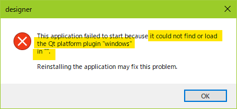
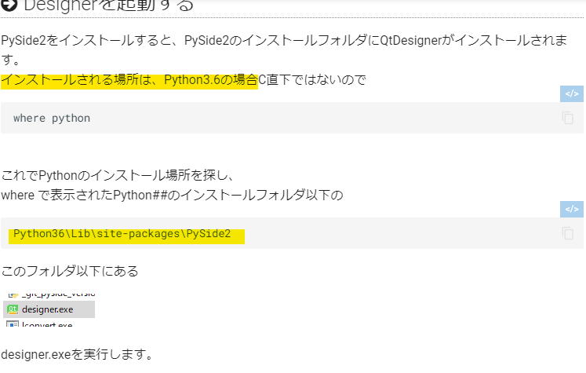
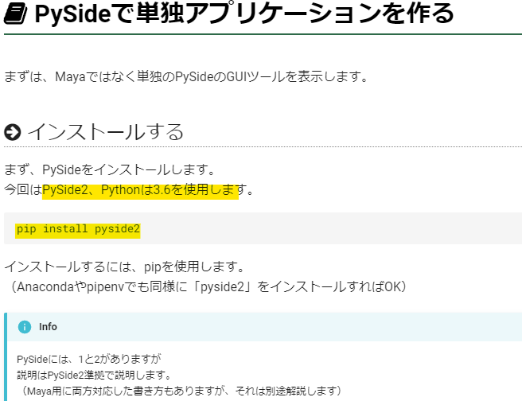
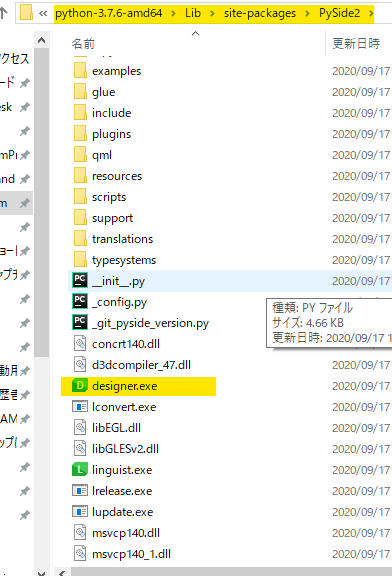

QtDesingner利用の実現まで¶
■ことの発端¶
Maya同梱のQtDesingnerが起動しない！
C:\Program Files\Autodesk\Maya2018\bin\designer.exe

{kind=link}
■解決策¶
どうやら、自分だけでないことが、ネットで調べて判明
https://rateionn.hatenablog.jp/entry/20171213/1513105495#1-QtDesigner%E3%81%A7GUI%E3%82%92%E4%BD%9C%E6%88%90%E3%81%99%E3%82%8B
しかし、肝心のシステム環境設定の変更のやり方がわからず
{kind=link}
そこで、さらにさまざま調べた結果、
https://fereria.github.io/reincarnation_tech/11_PySide/01_PySide_Basic/00_Tutorial/02_create_designer/
に行きつく
そうだ、なにもMayaにこだわる必要はないのだ
どうやら、PySide2をインストールすると、PySide2のインストールフォルダにQtDesignerがインストールされるという
では、PySide2は、python何系に入るのだろうか。。
自分のマシーンには、
python2.7
C:\Users\███\program\Python27
python3.7
C:\Users\███\program\python-3.7.6-amd64
が、プレーンで入っている
筆者の記述では、上位pythonに入るようだ

{kind=link}
念のため、現時点で、
python3.7
C:\Users\███\program\python-3.7.6-amd64\Lib\site-packages
を覗くも、PySide2 フォルダは未だ確認されず
これで、わかった
どうやら、筆者の、一つ前のページ記述に従えばよさそうである
https://fereria.github.io/reincarnation_tech/11_PySide/01_PySide_Basic/00_Tutorial/01_start/

{kind=link}
■実行¶
PowerShell 7 で
pip install pyside2
を実行した
1 2 3 4 5 6 7 8 9 | |
結果
python3.7
C:\Users\███\program\python-3.7.6-amd64\Lib\site-packages
の、PySide2 フォルダが確認できた

{kind=link}
pip は便利で、しかるべきところに、インストールしてくれていた
QtDesingner.exe 実行！！
起動した
以上。